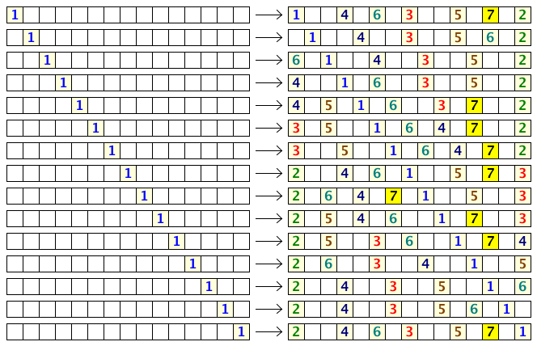

There are $N$ seats in a row. $N$ people come one after another to fill the seats according to the following rules:
Note that due to rule 1, some seats will surely be left unoccupied, and the maximum number of people that can be seated is less than $N$ (for $N \gt 1$).
Here are the possible seating arrangements for $N = 15$:

We see that if the first person chooses correctly, the $15$ seats can seat up to $7$ people.
We can also see that the first person has $9$ choices to maximize the number of people that may be seated.
Let $f(N)$ be the number of choices the first person has to maximize the number of occupants for $N$ seats in a row. Thus, $f(1) = 1$, $f(15) = 9$, $f(20) = 6$, and $f(500) = 16$.
Also, $\sum f(N) = 83$ for $1 \le N \le 20$ and $\sum f(N) = 13343$ for $1 \le N \le 500$.
Find $\sum f(N)$ for $1 \le N \le 10^{12}$. Give the last $8$ digits of your answer.